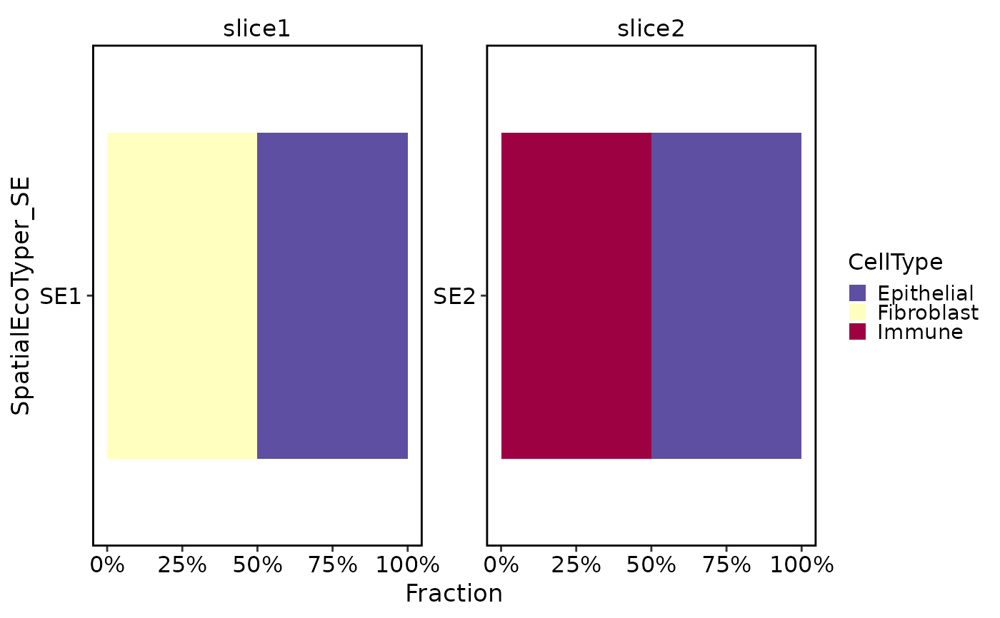

Plot SpatialEcoTyper composition across cell types, samples, or other metadata groups using scop's default plotting theme and palettes.
Arguments
- srt
A
Seuratobject.- se.by
Metadata column containing SpatialEcoTyper labels.
- group.by
Metadata column used as the composition group.
- sample.by
Optional metadata column used for faceting.
- position
Bar position.
"fill"shows fractions and"stack"shows counts.- palette, palcolor
Palette passed to
palette_colors().- legend.position
Legend position.
- theme_use
Theme function name. Default is
"theme_scop".- theme_args
Additional arguments passed to the theme function.
- verbose
Whether to print the message. Default is
TRUE.
Examples
counts <- matrix(
c(3, 0, 1, 2, 0, 4, 1, 0, 2, 1, 3, 0),
nrow = 3,
byrow = TRUE
)
rownames(counts) <- c("EPCAM", "COL1A1", "PTPRC")
colnames(counts) <- paste0("spot", 1:4)
srt <- Seurat::CreateSeuratObject(counts)
#> Warning: Data is of class matrix. Coercing to dgCMatrix.
srt$SpatialEcoTyper_SE <- c("SE1", "SE1", "SE2", "SE2")
srt$CellType <- c("Epithelial", "Fibroblast", "Immune", "Epithelial")
srt$sample <- c("slice1", "slice1", "slice2", "slice2")
SpatialEcoTyperCompositionPlot(
srt,
group.by = "CellType",
sample.by = "sample",
position = "fill"
)
